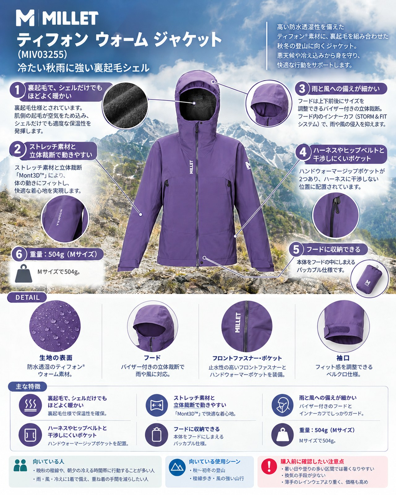

10月半ばの山は、低気圧と高気圧が交互に通り天気が変わりやすい時期です。標高が上がるほど気温は下がり、高い山では初冠雪の便りも届く頃です。雨に打たれたうえに風で体が冷える、という場面が増えます。
導入：雨と冷えが重なる秋の山に
10月半ばの山は、低気圧と高気圧が交互に通り天気が変わりやすい時期です。標高が上がるほど気温は下がり、高い山では初冠雪の便りも届く頃です。雨に打たれたうえに風で体が冷える、という場面が増えます。
ミレーの「ティフォン ウォーム ジャケット」（品番MIV03255）は、防水透湿のシェルの裏側を起毛にしたジャケットです。薄手のレインウェアとは違い、雨・風・冷えをこの1着で受け止める考え方の製品で、晩秋の稜線歩きや、朝夕の冷え込む時間帯に行動する山行に向いています。
基本スペック
| 項目 | 内容 |
|---|---|
| 商品名 | ティフォン ウォーム ジャケット |
| 品番 | MIV03255 |
| 価格 | 39,600円（税込・公式オンラインストア表示） |
| 重量 | 504g（Mサイズ） |
| 素材 | ティフォン®ウォーム ナイロン100％（裏起毛仕様） |
| 耐水圧／透湿性 | 30,000mm／40,000g/m²/24h |
| サイズ | XS・S・M・L・XL（ユーロサイズ） |
| カラー | PAPRIKA、BLACK - NOIR、FOGGY DEW、GALAXY、OTTER |
特徴とメリット
裏起毛で、シェルだけでもほどよく暖かい公式ページでは裏起毛仕様とされています。同じシリーズの前のモデルの使用例でも、気温5℃ほどの山で、ベースレイヤーの上にこのジャケットを着るだけで行動できたと紹介されています。休憩のたびに中間着を足すのが面倒な人には便利な特徴です。
ストレッチ素材と立体裁断で動きやすい公式ページには、ストレッチ素材と立体裁断「Mont3D™」の記載があります。同じシリーズでも、柔らかく動きを妨げない着心地がよく挙げられています。
雨と風への備えが細かいフードは上下前後にサイズを調整できるバイザー付きの立体裁断で、フード内のインナーカフ（STORM & FITシステム）でフィット感を細かく調節できます。フロントはダブルスライダーの止水ジップ、袖口はベルクロ、裾はドローコードで調節できます。
ハーネスやヒップベルトと干渉しにくいポケットハンドウォーマージップポケットが2つあり、公式ページではハーネスに干渉しない位置とされています。ザックのヒップベルトを締めたままでも手を入れやすい配置です。
フードに収納できる本体をフードの中にしまえるパッカブル仕様です。晴れ間に脱いでもザックの中でかさばりにくくなります。
デメリット・注意点
- 暑い日や登りの多い区間では暑くなりやすい：裏起毛は暖かさと引き換えです。前のモデルのレビューでは、汗を多くかく強度の高い行動で裏起毛が気になり、脱ぎたくなったと指摘されています（単独のレビューの意見）。日中に気温が上がる低山では出番が限られます。
- 換気の手段が少ない：公式ページに記載されているベンチレーションはフロント上部のスナップボタンで、脇下のベンチレーションの記載はありません。前のモデルのレビューでも、脇下のジッパーが欲しいと書かれています。
- 薄手のレインウェアより重く、価格も高め：重量は504g（Mサイズ）、価格は39,600円（税込）です。夏の雨具として軽さを優先したい人には向きません。
- 本格的な雪山用ではない：前のモデルのレビューでは、山スキーやアイスクライミングのような本格的な雪山の用途には専用のモデルを勧めています。
向いている人・向いていない人
◎向いている人
- 晩秋の稜線や、朝夕の冷える時間帯に行動することが多い人
- 雨・風・冷えに1着で備え、重ね着の手間を減らしたい人
- ハーネスやヒップベルトを使う山行で、ポケットを使いやすくしたい人
△向いていない人
- 汗を多くかく速いペースの山行が中心の人
- 気温が高めの低山で、軽いレインウェアを探している人
- 雪山の本格的な用途を考えている人
まとめ
ティフォン ウォーム ジャケットは、耐水圧30,000mm・透湿性40,000g/m²/24hの防水シェルに裏起毛を組み合わせ、冷たい雨と風の中で頼れる1着です。動きやすさとフードの調整機能もそろっています。一方で暑い条件では熱がこもりやすく、換気の手段も多くありません。気温が下がる秋から初冬の山で、寒さと雨の両方に備えたい人に合うジャケットです。
この記事で紹介した商品
価格・重量・在庫は各ブランド公式サイトの記載（確認日つき）にもとづきます。商品を押すと、購入先を選べます。
この記事にはアフィリエイト広告が含まれます。リンク先での購入により、当サイトが報酬を受け取る場合があります。山行の前には、最新の気象とルートの状況を必ずご確認ください。